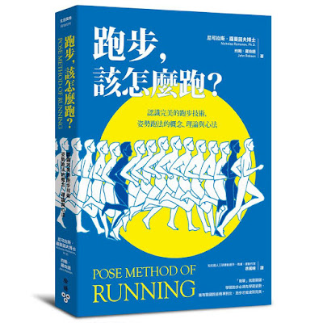

← 回部落格
新版的《跑步，該怎麼跑？》

六年多前完成了《跑步，該怎麼跑？》的第一版譯稿。當時才剛退伍，第一次翻譯雖盡了全力，但不免有些生疏，這些年來不斷跟作者學習，再加上在訓練與教學上的實踐，體會不同，對於書中的詞彙、文句與訓練動作的掌握也不同。這一次的改版，在跟作者密切溝通下展開。為了更精準傳達 Pose Method 的意涵，經過了長久的醞釀，全書重新修訂，終於可以在今年結束前出版，大幅調整與增加的部分整理如下：
- 舊版「關鍵姿勢」(Key Pose)改成「關鍵跑姿」(Running Pose)。因為每項運動都有一到三個關鍵姿勢，以目前跟作者學過的其他運動為例，自行車有一個、游泳有兩個、跨欄有兩個，但跑步只有一個，因此簡稱為「關鍵跑姿」較佳。新版的第 7 部特別增加了第 42 章的內容，使跑者更加深入認識〈關鍵跑姿與體重的本質、意義與價值〉。
- 舊版中多次提到運用「後大腿肌」去拉起腳掌，雖然上拉的主要作用肌群為大腿後側肌群是事實沒錯，但這會使跑者誤以為上拉時要主動命令收縮後大腿肌群。姿勢跑法的教學理念中特別強調：不想著哪裡發力，只專注於「姿勢」與「動作」，以上拉這個動作來說，運動員要專注的重點是：腳跟收在臀部下方的「姿勢」。過去有些跑者上拉過度而造成後大腿緊繃，所以在新版中特意請作者增加了一段解釋：「拉起的動作大都是由腿後肌群所完成。沒錯，從解剖學和生理學的角度來看這個動作，主要的收縮肌群在後大腿，但運動員下令的對象不是腿後肌群，而是拉起腳掌的動作。肌肉發力來執行拉起和屈膝的動作，這是自然演化的發展過程，你不需要主動命令肌肉收縮用力，你只需專注在動作本身，使肌肉的收縮成為下意識的自發過程。」為了避免讀者誤解，第 29 章舊版標題是〈後大腿肌群的練習方式〉，新版改為〈拉起的訓練方式〉，最後也特別增加了第 44 章來說明〈拉起的本質、意義與價值〉。
- 舊版中多次用了「前傾」這個詞，初版的原文是「lean」，作者也承認「lean」這個詞會誘導跑者肩膀向前傾，但作者想要表達的是身體受到重力作用繞著支撐腳向前「落下」(Fall)的現象，跑者只是主動改變姿勢，讓重力發揮功能。這個「落下的姿勢」如同關鍵跑姿，肩膀必須在臀部上方，而非前傾。舊版中用「打直前傾」，很多人會誤以為軀幹是像「斜槓 / 」一樣前傾，但傾斜的是支撐腳到臀部，上半身仍要盡量保持直立。為了把其中的差異說清楚，不只調整了舊版中的文句，也增加了第 43 章來說明〈落下的本質、意義與價值〉。
- 舊版中太過強調「前腳掌著地」，但前足著地只是腳掌落地點接近臀部下方的結果。作者也在附錄 C 的常見問題 Q&A 中來回說明這個問題：「『姿勢跑法』並沒有要求跑者刻意以前腳掌先著地；再者，前足著地只是正確跑步姿勢下的結果，並非我們要刻意執行的動作。我從來沒有教跑者要用前足先著地。我們教的是：在落下之後要盡快進入關鍵跑姿，也就是後腳要盡快回到臀部下方。如果跑者能做到這一點，自然會輕巧地以前足『先』著地。」而且前足「先」著地並非踮腳跑，落地後腳跟還是會順勢下降。
- 舊版中的許多示範圖示不夠精確，會誤導人踮腳跑與彎腰跑，這次也一併做了修正，總共修正了 50 張圖，圖說的地方也增添了比較詳細的說明。
除了上述五點之外，最後我們請作者針對常見的 12 個問題做了回覆，附在新版書的最後：
- 您認為目前跑者普遍存在怎樣的問題？
- 「姿勢跑法」的獨特之處在哪？
- 為什麼「姿勢跑法」不談摩擦力？摩擦力在「姿勢跑法」理論底下的功用為何？
- 過去您在教大眾跑者學習「姿勢跑法」時碰到最大的問題是什麼？跑者在學習過程中有什麼需要特別注意的嗎？如何提高學習的效益？
- 很多跑者認為「姿勢跑法」強調前腳掌先著地，但跑者在練習過後反而造成小腿疼痛的問題，請問小腿疼痛是練習「姿勢跑法」的必經過程嗎？如何避免小腿和阿基里斯腱的疼痛？
- 哪一種鞋子最適合跑步？
- 如果把「姿勢跑法」用在訓練上，具體該關注哪些數據指標？這些數據對跑者有何意義？
- 請問如何減少跑步時上下振盪的垂直振幅？
- 腳步聲很大，該如何改善？
- 拉起要多快或多用力才對？因為專注在拉起之後步頻變快了，感覺呼吸變得更喘了，該怎麼辦？
- 為何您只有談論跑步技術的訓練，而沒有談到長跑者最重要的體能訓練？您認為體能訓練在突破個人最佳成績（破 PB）上的角色為何？
- 可以把「姿勢跑法」的概念用在其他運動項目嗎？
==
有興趣的跑者或讀者可以參考博客來的介紹，也可以在上面試讀新版中第 41~43 章的內容：https://goo.gl/9etN5w
徐國峰・KFCS 耐力訓練系統
看更多文章 →